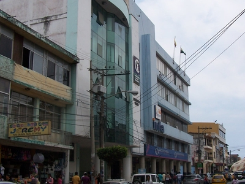
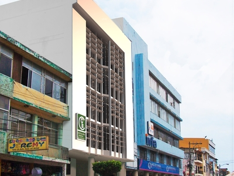

REMODELACIÓN EDIFICIO CONTRALORÍA GENERAL DE ESTADO
IMÁGENES

antes de la intervención

primera propuesta de fachada

segunda propuesta de fachada
MEMORIA
La única fachada a la calle, presentaba un problema de excesiva exposición al sol de la
mañana, causando incomodidad de los usuarios para trabajar. Una primera propuesta,
disponía de un sistema de quiebrasoles muy eficiente, sin embargo, por su expresión un
tanto radical, no fue aceptada, decantándose finalmente, por una fachada un tanto
corriente, pero más amable.
Proyecto: Patricio Guerrero Segovia
Equipo de apoyo: Verónica Guerrero, Patricio Moreno y Gonzalo Oviedo.
Año de proyecto: 2014
Ubicación: Esmeraldas, Ecuador